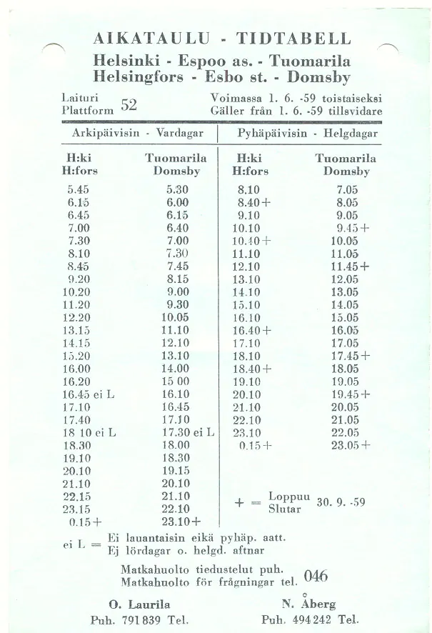
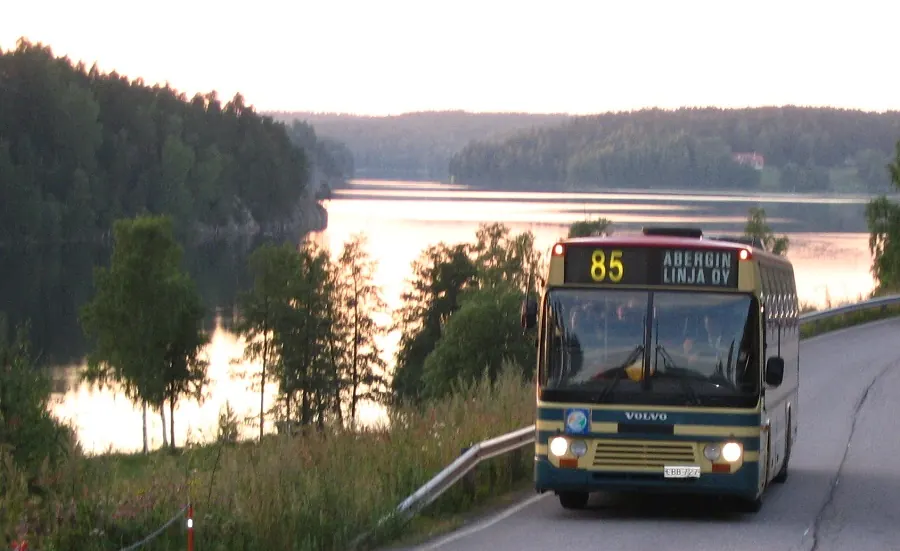
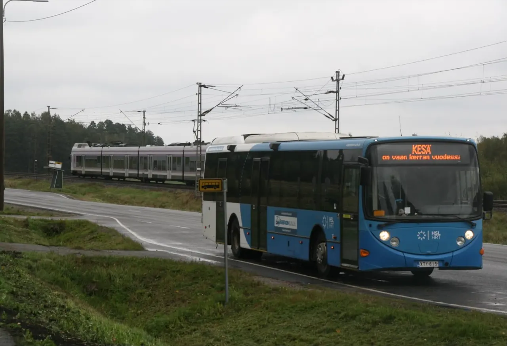
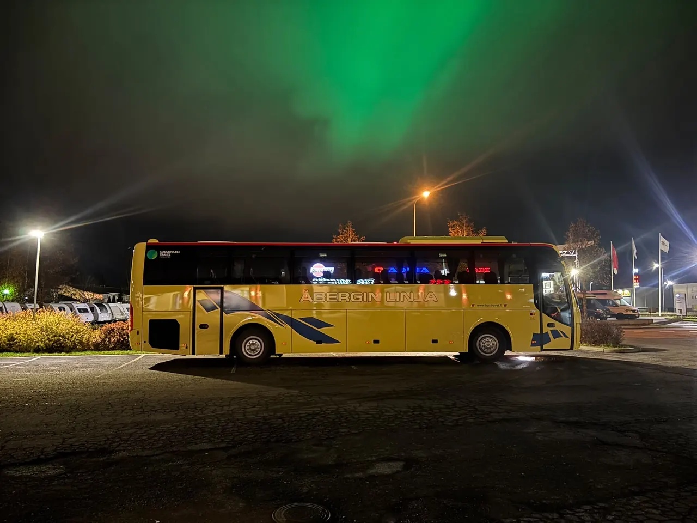
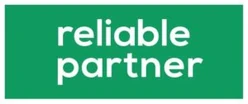
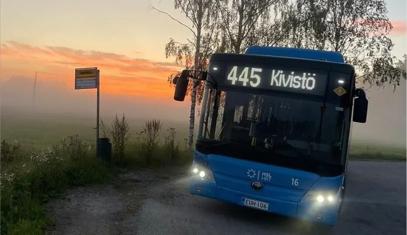

Åbergin Linjan bussit ovat liikennöineet maamme teillä vuodesta 1953. Päämääränä on tarjota laadukkaita ja ystävällisiä joukkoliikenne- sekä matkailupalveluita.
Vuodesta 1953
Historia
- 1952
Olympialaiset
Helsingin olympialaisiin tarvittiin paljon linja-autoja, ja Nils Åberg laajensi toimintaansa taksiliikenteestä linja-autoihin.
- 1953
Oma linja Nuuksioon
Vuoden 1953 alussa alkoi oma linja Helsingistä Koivulaan Nuuksioon.

- 1960-luvulta
Tilausliikenne kasvaa
Busseihin tulivat mikrofonit, verhot, pehmeät istuimet kaatuvilla selkänojilla, radiot ja autoemäntä. Tällaiset autot olivat harvinaisia pääkaupunkiseudun linjaliikenteessä.
- 1966
Åbergin Linja Oy
Oiva Laurila ja Nils Åberg perustivat osakeyhtiöt, ja nimeksi tuli Åbergin Linja Oy.

- 1990-luvulla
Viroon ja Baltiaan
Tilausajot kulkivat Leningradiin, Pohjois-Norjaan ja Etelä-Ruotsiin, ja 1990-luvulla alkoivat matkat Viroon ja muihin Baltian maihin.
- 2003
50 vuotta
Asiakaskyselyssä Åbergin Linja valittiin jälleen Espoon siisteimmäksi, tasokkaimmaksi ja asiakasystävällisimmäksi liikennöitsijäksi.
- 2011
Yrityskauppa
Turun turistiauton kaupan myötä liikenne kasvoi, ja ensimmäiset HSL:n sini-valkoiset bussit tulivat liikenteeseen.

- 2020-luvun vaihde
Sähköbussit
Ensimmäiset sähköbussit tulivat käyttöön 2020-luvun vaihteessa.
- 2021
Sustainable Travel Finland
Merkki ensimmäisenä bussiyhtiönä, ja kesällä luontobussi Helsingin keskustasta Nuuksioon.
- 2025
FC Hongan kumppani
FC Honka ja Åbergin Linja sopivat pitkäaikaisen kumppanuuden jatkamisesta.
- Nyt
Tilausajot kasvussa
Pitkät hankintasopimukset kuntien ja Suomen valtion kanssa sekä moderni, ympäristöystävällinen kalusto.

Lähteet: Åbergin Linjan omat sivut, Espoon perinneseuran 50-vuotishistoriikki, Metsähallitus ja FC Honka.
Laatu ja ympäristö
Vastuullisesti tien päällä
Ennakoivalla ajolla, huolellisella huollolla ja turhia ajoja välttämällä minimoidaan polttoaineen ja muiden ympäristölle haitallisten aineiden kulutus.

- ISO 9001 – Laadunhallinta
- ISO 14001 – Ympäristö
- ISO 45001 – Työympäristö ja työhyvinvointi
- STF – Sustainable Travel Finland

Kertokaa matka, me teemme tarjouksen
Tarjous jopa parissa toimistotunnissa. Toimisto palvelee arkisin 8–16 puhelimitse ja sähköpostitse.